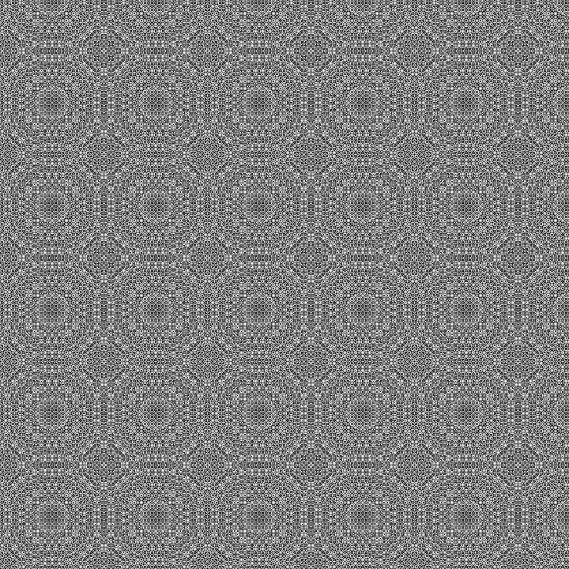

Ian Parberry,
"The Unexpected Beauty of Modular Bivariate Quadratic Functions",
Journal of Mathematics and the Arts, Vol. 12, No. 4, pp. 197-206,
2018.
Abstract
Modular bivariate quadratic functions
are used to procedurally generate textures that resemble
ornamentation, skin, scales, feathers, and textiles.
They are easy to implement and particularly suited to parallel
execution as a pixel shader.
A prototype browser-based procedural texture generator
with an interface suitable for use by non-mathematicians
such as designers and artists is described.
The following are larger versions of the textures from
the figures in the manuscript. Click on the images to open in Biq.

Figure 1: Rectilinear ornamentation, p=38, q=129.

Figure 3 (left): Rectilinear ornamentation, p=13, q=131.
Figure 3 (center): Rectilinear ornamentation, p=15, q=131.
Figure 3 (right): Rectilinear ornamentation, p=22, q=131.

Figure 4 (left): Rectilinear ornamentation, p=22, q=131, 2 grayscale bands.
Figure 4 (center): Rectilinear ornamentation, p=22, q=131, 3 grayscale bands.
Figure 4 (right): Rectilinear ornamentation, p=22, q=131, 4 grayscale bands.
Figure 5 (left): Rectilinear ornamentation, p=4, q=101, 4 color bands, Primary palette.
Figure 5 (center): Rectilinear ornamentation, p=4, q=101, 4 color bands, Toucan palette.
Figure 5 (right): Rectilinear ornamentation, p=4, q=101, 4 color bands, Autumn palette.
Figure 6 (left): Diagonal ornamentation, p=11, q=131.
Figure 6 (center): Diagonal ornamentation, p=46, q=131.

Figure 6 (right): Diagonal ornamentation, p=47, q=131.
Figure 7 (left): Scales and feathers, p=2, q=101.
Figure 7 (center): Scales and feathers, p=3, q=101.
Figure 7 (right): Scales and feathers, p=4, q=101.
Figure 8 (left): Scales and feathers, p=10, q=101.
Figure 8 (center): Scales and feathers, p=44, q=101.
Figure 8 (right): Scales and feathers, p=45, q=101.
Figure 10 (left): Textile, p=8, q=256.
Figure 10 (center): Textile, p=38, q=256.
Figure 10 (right): Textile, p=136, q=256.
Figure 11 (left): Textile, p=5260, q=26509, 4 color bands, Ocean palette.
Figure 11 (center): Scales and feathers, p=11, q=217, 4 color bands, Autumn palette.
Figure 11 (right):
Scales and feathers, p=2101, q=4319, 4 color bands, Toucan palette.